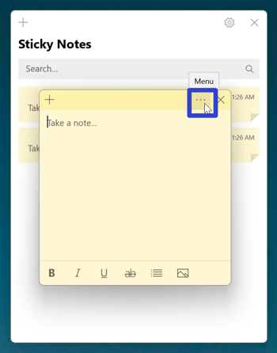
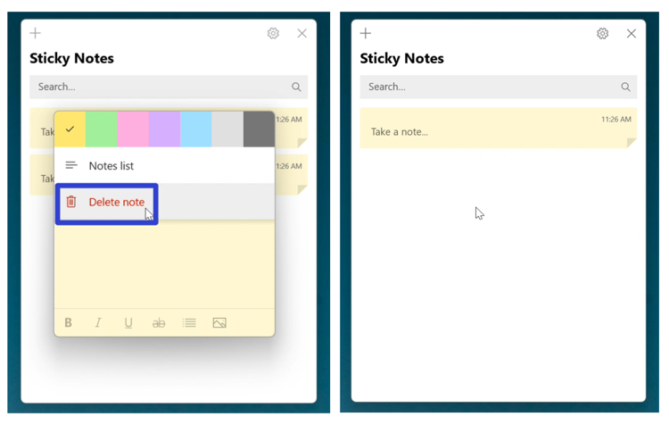
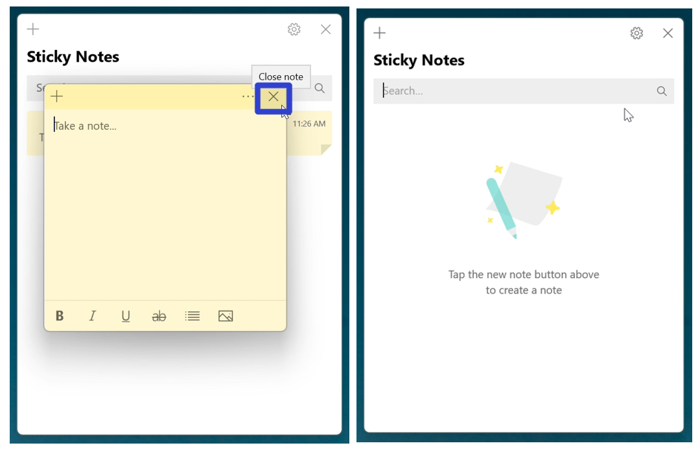
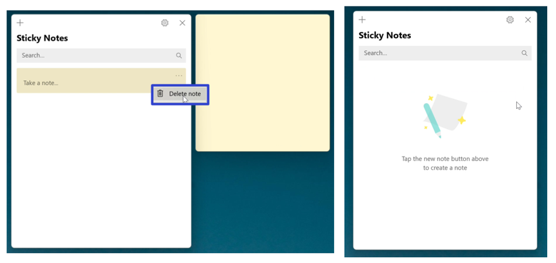
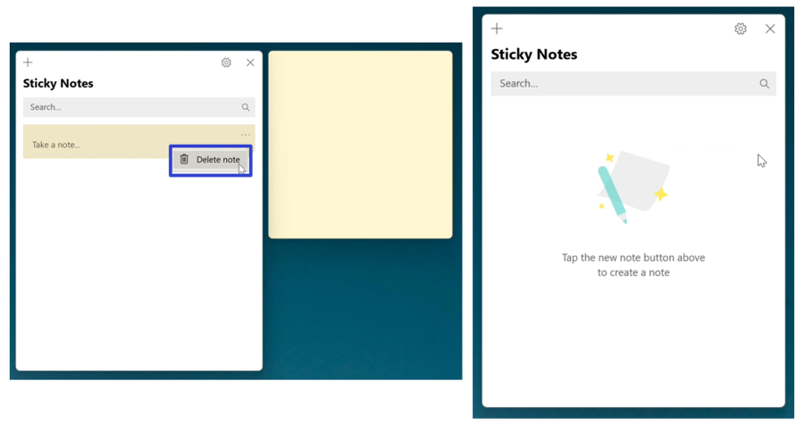
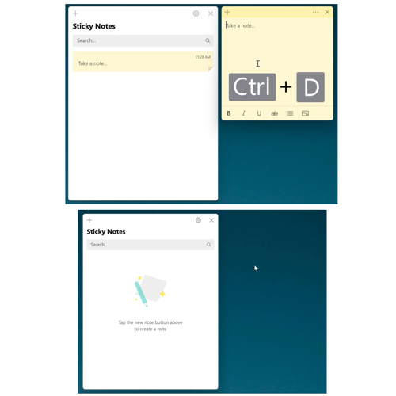

How to Delete Sticky Notes in the Microsoft Sticky Notes App (Windows 11)
This tutorial covers:
How to Delete a Sticky Note:
No time to scroll down? Click through these tutorial slides:
Follow along with a video tutorial:
How to Delete a Sticky Note With Menu
- Step 1: First open a sticky note. Go to the upper right and click the “Menu” or “…” button. 
- Step 2: In the menu that opens, click “Delete note”. 
How to Delete a Sticky Note With Click
- Step 1: Open a sticky note. Go to the upper right corner and click the “Close” or “X” button. 
How to Delete a Sticky Note From the Notes List
- Step 1: First open the Notes List. On a sticky note, click the “Menu” or “…” button.
- Step 2: In the menu that opens, click “Delete note”. 
How to Delete a Sticky Note With Right Click
- Step 1: Open the Notes List. Right click a sticky note.

- Step 2: In the menu that opens, click “Delete note”. 
How to Delete a Sticky Note With Keyboard Shortcut
- Step 1: First open a sticky note. On the keyboard press Ctrl + D. 
Refer to these instructions later with this free tutorial PDF.